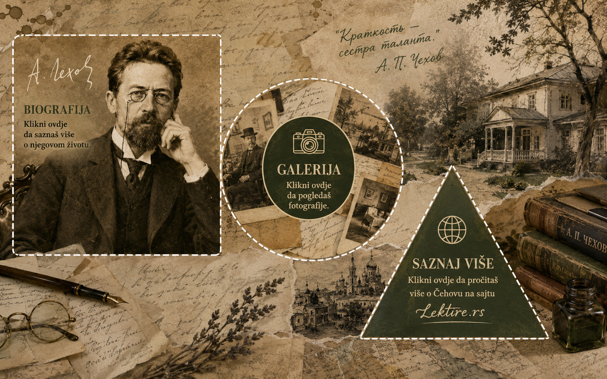

Klikni na lijevi dio slike da otvoriš biografiju, na krug da pogledaš galeriju, a na trougao da pročitaš više o Čehovu na spoljašnjem sajtu.

Izaberi jednu od označenih oblasti na slici da saznaš više o životu i djelu Antona Pavloviča Čehova.